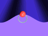
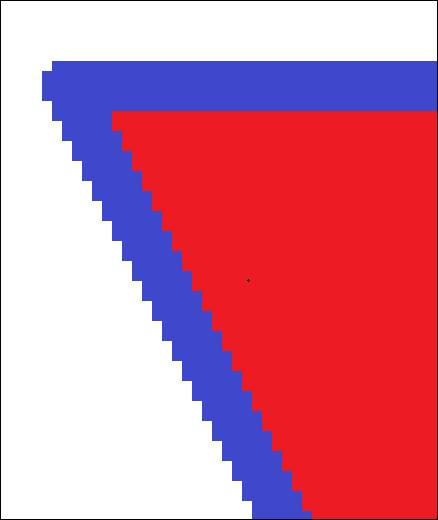

Multimedia
MULTIMEDIA LIGHT
Light WAVE - TRANSVERSE & SOUND WAVE - LONGITUDINAL
Bitmap vs Vector images:
This 50-pixel bitmap image is on a background which is 100x100 pixels. Its file size is 30 KB:
This 200-pixel bitmap image is on a background which is 400x400 pixels. Its file size is 469 KB (and is the same size whether the background is white or yellow):
Note that if this 50-pixel bitmap image is enlarged in Word, the borders blur due to “antialiasing”:


If the 50-pixel bitmap image is enlarged in paint, there is no antialiasing and the image will have sharp steps:

The BMP files are much bigger than the other formats because EVERY PIXEL has a 3 BYTE colour:
- The 50-pixel image has a border size of 100 x 100 = 10,000 pixels
- The 200-pixel image has a border size of 400 x 400 = 160,000 pixels
- The 600-pixel image has a border size of 1200 x 1200 = 1,440,000 pixels
To see what’s in the 200 pixel BMP file, right click and "Open with" > "Notepad":
> loudness trend-Wike... 6/07/2019 10:56 PM Adobe Photoshop CC 2018 Adobe Photoshop CC 201 g fanView 32- bit Microsoft Visual Studio 2017 L] Notepad Paint Paint 3D Photos Sketch800k Search the Store Choose another app Triangle-2DOpx-GIF.gif Triangle-2DOpx-JPG.jpg Triangle-2DOpx- PNG.png 25/07/2019 11:32 AM 25/07/2019 11:31 AM 25/07/2019 11:32 AM GIF File GIF File GIF File GIF File GIF File GIF File GIF File GIF File GIF File PNG File PNG File Windows Mt Data Base Fil BMP File GIF File Windows Mt PNG File ">
The file will take a while to open and should look like this:
If you paste all this into Word, it’s about 65 pages with 465,610 characters which is close to the 469 Bytes!!!
To do the calculations, we have:
Total pixels = 400 x 400
= 160,000
Total bytes ≈ 3 bytes per pixel
≈ 3 x 160,000
≈ 480,000 Bytes
≈ 480 kilobytes
A vector image can be expanded without distortion because it is a few lines of code such as those shown below:
Example triangle01 specifies a path in the shape of a triangle. (The M indicates a moveto, the Ls indicate linetos, and the z indicates a closepath).
<?xml version="1.0" standalone="no"?>
<!DOCTYPE svg PUBLIC "-//W3C//DTD SVG 1.1//EN"
"http://www.w3.org/Graphics/SVG/1.1/DTD/svg11.dtd">
<svg width="4cm" height="4cm" viewBox="0 0 400 400"
xmlns="http://www.w3.org/2000/svg" version="1.1">
<title>Example triangle01- simple example of a 'path'</title>
<desc>A path that draws a triangle</desc>
<rect x="1" y="1" width="398" height="398"
fill="none" stroke="blue" />
<path d="M 100 100 L 300 100 L 200 300 z"
fill="red" stroke="blue" stroke-width="3" />
</svg>
|
Example triangle01 |

View this example as SVG (SVG-enabled browsers only)
{kind=link}
Paths – SVG 1.1 (Second Edition)
http://www.w3.org/TR/SVG/paths.html#PathDataClosePathCommand
Screen clipping taken: 25/07/2018 8:39 PM
If the following code is copied into the <body> of your “multimedia” web page, you will see some amazing shapes. Alter the highlighted code to make your own shape:
<h2>200 pixel vector triangle the same as the bitmap - just 6 lines of code!</h2>
<!-- Code below taken from Paths – SVG 1.1 (Second Edition) -->
<!-- http://www.w3.org/TR/SVG/paths.html#PathDataClosePathCommand -->
<svg width="400" height="400" viewBox="0 0 400 400"
xmlns="http://www.w3.org/2000/svg" version="1.1">
<desc>A path that draws a triangle 200 pixels wide by 200 high</desc>
<rect x="2" y="2" width="396" height="396"
fill="LightYellow" stroke="black" stroke-width="4" />
<path fill="red" stroke="blue" stroke-width="2"
d="M 100 100 L 300 100 L 200 300 z" />
<!-- <defs> -->
</svg>
<h2>600 pixel vector triangle - still just 6 lines of code (about 360 characters, so less that half a kilobyte)</h2>
<!-- Code below taken from Paths – SVG 1.1 (Second Edition) -->
<!-- http://www.w3.org/TR/SVG/paths.html#PathDataClosePathCommand -->
<svg width="800" height="800" viewBox="0 0 800 800"
xmlns="http://www.w3.org/2000/svg" version="1.1">
<desc>A path that draws a triangle 600 pixels wide by 600 high</desc>
<rect x="4" y="4" width="792" height="792"
fill="LightYellow" stroke="black" stroke-width="6"/>
<path d="M 100 100 L 700 100 L 400 700 z"
fill="red" stroke="blue" stroke-width="4" />
</svg>
<h2>this is my modification of an SVG image:</h2>
<!-- Code below taken from Paths – SVG 1.1 (Second Edition) -->
<!-- http://www.w3.org/TR/SVG/paths.html#PathDataClosePathCommand -->
<svg width="8cm" height="8cm" viewBox="0 0 800 800"
xmlns="http://www.w3.org/2000/svg" version="1.1">
<desc>Draw your own path</desc>
<path d="M 50 50 L 250 50"
fill="red" stroke="blue" stroke-width="20" />
</svg>
<h2>A fancier vector drawing from GitHub - less than 40 lines of code (1048 characters, so around 1kb of file size)</h2>
<h3>https://github.com/oreillymedia/Using_SVG/blob/master/ch01-overview-files/rasterization.svg</h3>
<!-- SVG code -->
<svg viewBox="0 0 480 350"
xmlns="http://www.w3.org/2000/svg" xml:lang="en"
xmlns:xlink="http://www.w3.org/1999/xlink" >
<style>
text {
font-family: Tahoma, sans-serif;
text-anchor: middle;
font-size: 18px;
fill: currentColor;
}
path {
stroke: dimgray;
stroke-width: 4;
stroke-dasharray: 8 4;
}
</style>
<pattern id="low-res" patternUnits="userSpaceOnUse"
width="20" height="20">
<g id="dots">
<circle fill="red" r="5" cx="10" cy="5" />
<circle fill="lime" r="5" cx="5" cy="15" />
<circle fill="blue" r="5" cx="15" cy="15" />
</g>
</pattern>
<pattern id="high-res" patternUnits="userSpaceOnUse"
width="8" height="8" viewBox="0 0 20 20">
<use xlink:href="#dots" />
</pattern>
<g fill="url(#low-res)">
<text x="120" y="100%" dy="-1em" >Low-Resolution Display</text>
<path id="shape"
d="M100,10 C200,0 300,250 120,200 S50,300 200,300 C0,200 0,20 100,10Z" />
</g>
<g transform="translate(240,0)" fill="url(#high-res)">
<text x="120" y="100%" dy="-1em" >High-Resolution Display</text>
<use xlink:href="#shape" />
</g>
</svg>
200 pixel vector triangle the same as the bitmap - just 6 lines of code!
600 pixel vector triangle - still just 6 lines of code (about 360 characters, so less that half a kilobyte)
this is my modification of an SVG image:
A fancier vector drawing from GitHub - less than 40 lines of code (1048 characters, so around 1kb of file size)
https://github.com/oreillymedia/Using_SVG/blob/master/ch01-overview-files/rasterization.svg
Back to bitmap images:
This bitmap image is 200 x 200 pixels sitting on a canvas of 400 x 400 pixels:
Here is a smaller graphic:
Expanding in Paint can be done with the resize tool as 500% (5 times as big) and then again at 200% (10 times in all):
Enlarging 10 times in Paint shows clear pixilation (aliasing):
Enlarging in Word shows anti-aliasing:

lkljklj
klj
About
This is the site which downloads from with Dreamweaver 2016 and 2017. As I can't read the language printed, I've written this paragraph in English.